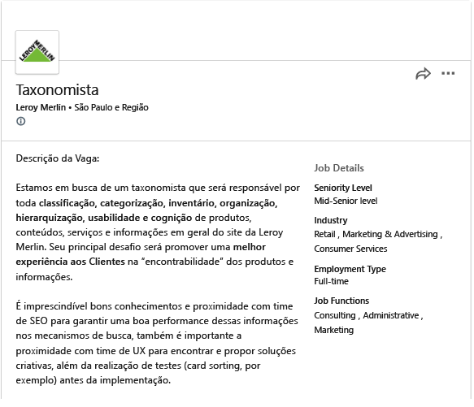
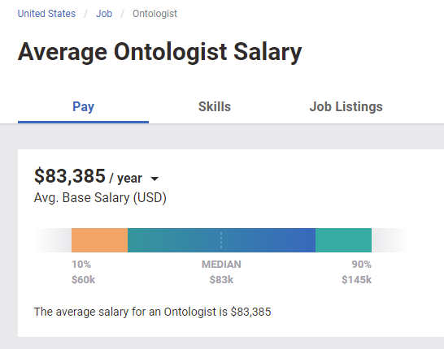

Carreira
À medida que cresce a demanda por boas ontologias em diferentes áreas do conhecimento, maior é a necessidade de ontologistas com conhecimento teórico-prático.

Disponível na Internet em:
https://www.linkedin.com/jobs/view/1911337360/
Acesso em 31/08/2020
Isso já é comum em países desenvolvidos como Alemanha, Inglaterra e Estados Unidos, onde ontologistas tem oportunidades e recebem uma boa remuneração .

Disponível na Internet em:
https://www.payscale.com/research/US/Job=Ontologist/Salary
Acesso em 21/10/2021
As empresas brasileiras já exibem anúncios para carreiras profissionais que podem ser achadas em sites profissionais e redes sociais, para cargos como:
- “Semantic-web consultant”
- “Ontologist”
- “Ontology manager”
- “Applied science manager”
- “Ontology expert”
- ”Knowledge engineering manager”